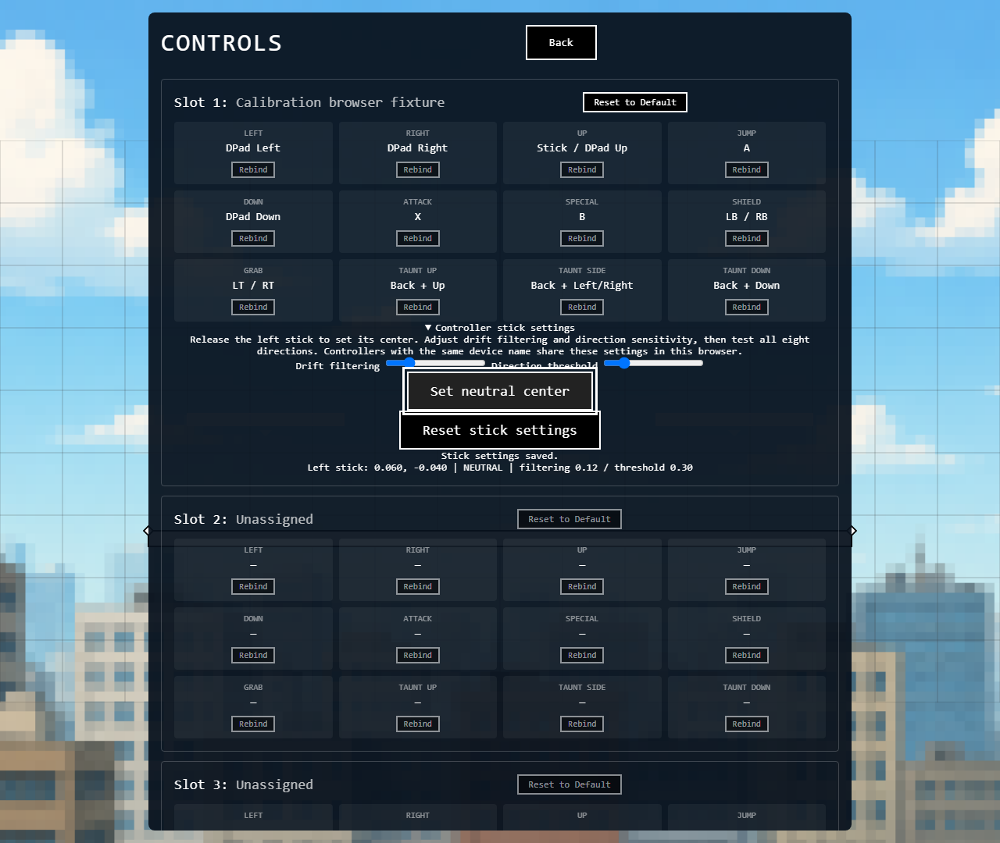
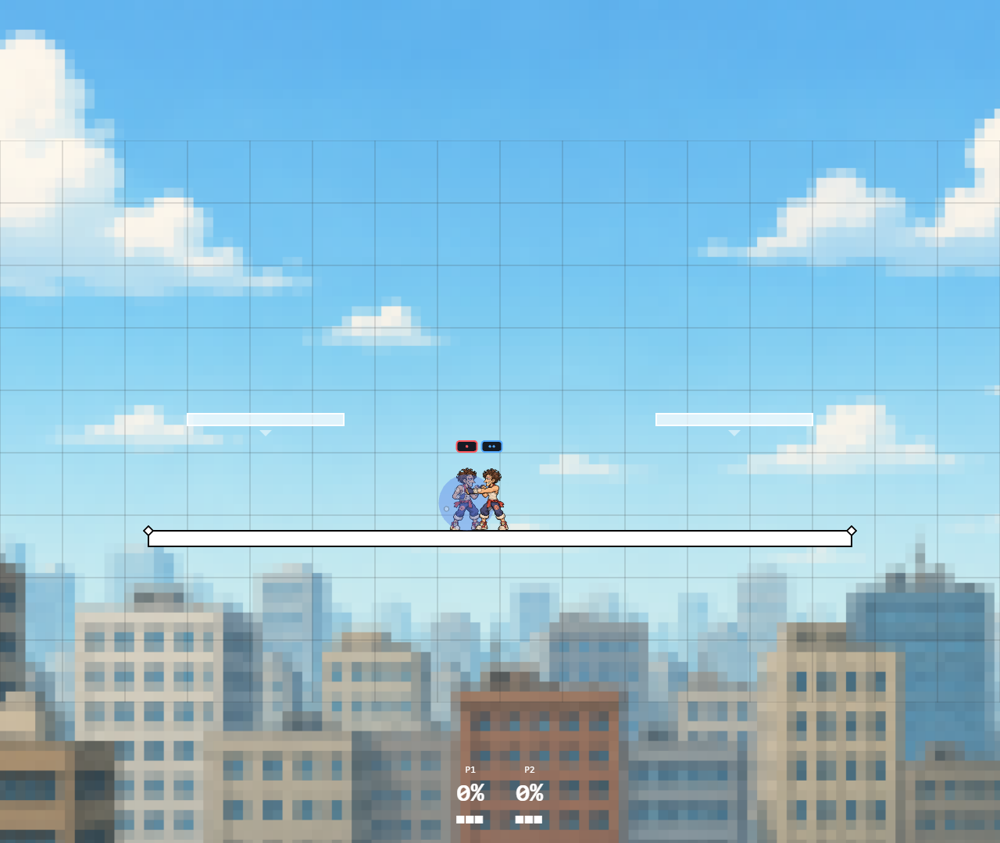

Controller calibration and defensive hitstop
Batch 34 · November 4, 2026. Implemented and regression-tested; full Ultimate parity remains incomplete.
Implementation, scope and remaining work · Validation · 96 independent shield timing cases
Controller settings
Open the game, choose Controls, then expand Controller stick settings for the connected device. Release the left stick, select Set neutral center, then test all eight directions. Drift filtering removes idle noise; direction threshold adjusts how far the stick must move. Reset restores defaults. Same-name devices share settings in this browser.

What changed
- Controls now has live left-stick readings, 60-sample neutral capture, drift filtering, direction threshold, persistence per browser/device name and reset. Gameplay uses the same saved profile. Controls scrolling and calibration cleanup on navigation fixed.
- Normal shield hitlag uses a distinct formula: minimum move multiplier 1, factor .67, electric scaling, cap 30, separate attached/unattached projectile attacker handling. Zero damage yields no freeze. Parry keeps its existing custom path.
- Shield SDI is horizontal, direction-tap based, has no body four-tick cooldown or 16-pulse cap, and has no automatic exit shift. Holding and vertical-only changes do not repeat movement.
- ASDI effect policy supports electric, paralyze, crumple and autoshift classifications. Supported effects shift on impact and on exit; zero-hitlag projectiles shift on impact only. Ordinary hits default to none. Vertical launch band 70 to below 110 degrees suppresses automatic shifts. Held contacts and shields suppress body ASDI.
- Removing a diagonal input component no longer creates another body pulse. Body pulse count is capped at 16. Unattached projectile body freeze no longer uses participant scaling.
Verification and limits
1,552 workspace tests passed, 17 skipped. All 52 browser checks passed across the review/gameplay/controller suite and separate four-client regression. Type checks passed. Production status is recorded in the linked validation file.

- No existing roster move was assigned a new electric/paralyze/crumple/autoshift identity. The policy is ready for explicit effect metadata; this does not add the underlying paralysis or crumple status systems.
- The calculator author functions provide the 96 shield timing references. Research notes describe shield taps and automatic-shift boundaries. Later autoshift and exact vertical-band behavior remain compatibility policy pending direct version-specific verification.
- Browser controller tests use a simulated standard-mapping gamepad, not a physical device. Same-name controllers share one profile.
- Shield browser screenshot extends confirmed jab contact to 30 frozen ticks for stable sampling; server tests assert the actual five-tick jab shield freeze.
World-space tuning remains explicit: body pulse 3 units, shield pulse 1.98 units, automatic shift 2 units per boundary. These distances and digital direction sampling are not calibrated to Ultimate analog behavior.
Next work
- Use Controls > Controller stick settings with real hardware; test neutral and all eight directions, then repeat shield and multihit escape drills.
- Analog input protocol and C-stick behavior, thresholds/rearm details, and world-space SDI/ASDI calibration.
- Shieldstun/damage/pushback and parry timing, shield-break interactions, effect-specific status behavior and later-version exceptions.
- Grounded early-frame upward SDI and consecutive-hit escape rules; launch speed/decay/gravity/LSI and remote-network/controller validation.
Research evidence
Implementation
packages/gamepad-input/src/calibration.tspackages/gamepad-input/src/standardMapping.tspackages/gamepad-input/src/GamepadPoller.tsapps/client/src/ui/ControllerCalibration.tsapps/client/src/ui/ControlsScreen.tsapps/client/src/ui/UIManager.tspackages/engine/src/hitbox/hitlag.tspackages/engine/src/hitbox/displacement.tspackages/engine/src/fsm/hitstop.tspackages/engine/src/hitbox/index.tsapps/server/src/GameEngine.ts